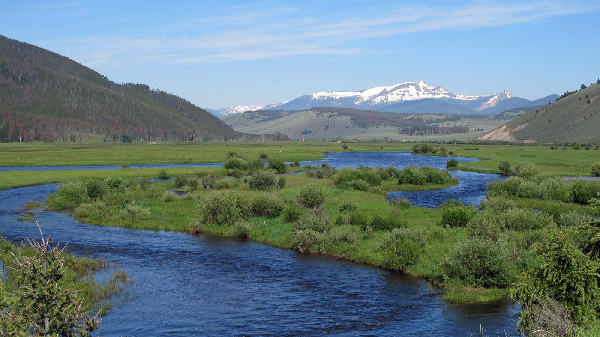

Watershed Analysis: ENSC 445/LRES 545
2025-02-05
Chapter 1 Introduction
This book provides the materials that we will use in Watershed Analysis (ENSC 445/545). In this class we will be learning the fundamentals of watershed analysis in R.
Instructor: Dr. Tim Covino
Class times: T 10:50 – 12:05; Th 10:50 – 12:05
Office hours: By appointment
Email: timothy.covino@montana.edu
Website: https://tpcovino.github.io/ensc_445_545_bookdown

1.1 Course overview and objectives
provide theoretical understanding and practical experience with common analysis and modeling techniques relevant to watershed hydrology.
provide training in analyzing, simulating, and presenting scientific data in written and oral formats.
1.2 Structure
This class will be largely hands-on, and students will be conducting watershed analyses and modeling exercises. We will be doing our analysis and modeling in R and will do some R coding in each class session. Programming is best learned by doing it often. We will generally have “lecture” on Tuesday, where we will talk about and work through various types of hydrological analyses. On Thursday’s you will then put the content from Tuesday to work in a lab where you will complete a variety of hydrological analyses in R.
Philosophical approach and books & resources we will utilize This course will use all online and open-source resources and will follow FAIR (findability, accessibility, interoperability, and reusability) data principles and promote sharing of hydrological education and research materials. Our computing will utilize open source R and RStudio software. Books and readings will include R for Data Science and Statistical Methods in Water Resources, but other readings will be made available on this bookdown page as needed. We will promote an open, equitable, and collaborative environment such that we can all succeed and improve our skills in watershed analysis.
Here are instructions for installing R and RStudio on your own computer if you would like Hands on Programming with R
1.3 Tentative schedule, subject to change
Week 1:
- Lecture (1/14): Introduction, review.
Work session (1/16): Getting started in R.
- Reading: Intro & Chapter 1 Introduction & 1-Data visualization in R for Data Science (RDS).
Week 2:
- Lecture (1/21): Overview and data viz.
- Work session (1/23): Data visualization, data wrangling, and programming.
- Reading: Chapter 2.1: Graphical Analysis of Single Datasets in Statistical Methods in Water Resources (SMWR). AND Chapters 2 & 3 2-Workflow: Basics & 3-Data transformation in RDS.
Week 3:
- Lab1 (1/28): Data viz, wrangling, and programming.
- Lab 1 (1/30): Data viz, wrangling, and programming.
Week 4:
- Lecture (2/4): Downloading and shaping data frames.
- Lab 2 (2/6): Downloading and shaping data frames.
- Submit term project ideas
- Reading: Introduction to the dataRetrieval package AND Chapter 4 of R for Data Science
Week 5:
- Lecture (2/11): Statistics in hydrology.
- Lab 3 (2/13): Statistics in hydrology.
- Reading: Chapter 1: Summarizing Data in SMWR AND Chapter 5 in RDS
Week 6:
- Lecture (2/18): Surface water: Rating curves and hydrographs.
- Lab 4 (2/20): Rating curves and hydrographs.
- Reading: Chapter 4: Hypothesis Tests in SMWR.
Week 7:
- Work session (2/25): Term project work session.
- Presentations (2/27): Term project updates
- Reading: Chapter 6 in RDS
Week 8:
- Lab 5 (3/4): Flow frequency analysis (low flows)
- Work session (3/6): Term project work session/guest lecture
- Reading: Definitions and characteristics of low flows in EPA Environmental Modeling Community of Practice
Week 9:
- Lecture (3/11): Cimate trend analysis
- Lab 6 (3/13): Trend analysis
- Reading: Chapters 12.1 & 12.2 12.1-General Structure of Trend Tests & 12.2-Trend Tests with No Exogenous Variables in SMWR.
Week 10: Spring break (3/18 & 3/20) - no class!
Week 11:
- Lecture or Work session (3/25): Precipitation or Term project work session
- Lab 7 or work session (3/27): Precipitation analysis or work session
- Reading: Chapters 10 and 11 in RDS
Week 12:
- Lecture/lab (4/1): Geospatial hydrology in R
- Lab 8 (4/3): Watershed delineation in R
- Reading: Geocomputation with R
- Reading: Geospatial analysis in R
Week 13:
- Lecture/lab (4/8): Term project work session
- Lab (4/10): Term project update presentations
- Reading An Overview of Rainfall-Runoff Model Types
Week 14:
- Lab (4/15): Term project work session
- Lab (4/17): Hydrologic modeling
Week 15:
- Lab (4/22): Term project work session
- Lab (4/24): Term project work session
Week 16: Term project presentations (4/29 and 5/1)
Week 17 (finals week): Submit term project R Markdown